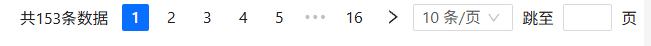

升级>>翼飞平台更新日志
序号
更新时间
更新前版本
更新后版本
操作
2025-02-03 15:20
B0.1.2
B0.1.2
日志
2025-02-03 15:20
B0.1.1
B0.1.2
日志
更新时间：

更新版本
查询
重置

查询条件
组件
规则
默认
更新时间
时间区间组件
空
更新版本
单选下拉框
下拉框内容为列表中出现的版本，搜索更新前和更新后
空
字段
取值
更新时间
2025-02-03 15:20，取值更新完成时间。
更新前版本
更新后版本
若是更新失败则更新后的版本同更新前一致
操作
支持查看日志
排序
按照更新时间降序排列
分页器
默认展示10条一页
记录点击更新按钮后的所有操作，更新成功的，和更新失败的